16 août 1968 - au nord de Hamillton (Ohio) 23 h 00. Un grand nombre de personnes ont vu l'ovni arriver, envoyer des
faisceaux de lumière vers le bas qui se réfléchissaient sur le lac de Greenbriar.
| 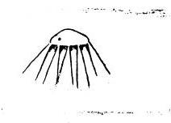 |
Notre représentation graphique du mystère des ovnis utilise des dessins effectivement réalisés par des
témoins pour décrire ce qu'ils avaient vu. Quelques-uns de ceux-ci ont dû être retouchés pour les besoins de
reproductions, ils n'ont cependant pas été modifiés. Quelques-uns sont des dessins d'artistes soigneusement basés
sur les descriptions des témoins.
Ce petit échantillon a été choisi parmi des centaines ces dernières années pour illustrer quelques-uns des
aspects principaux rapportés (cf. The UFO Evidence, notamment les pages 23, 54, 144, 147, 182).
Parmi ces aspects les plus évidents et les plus fréquents, typiques également des procès-verbaux établis, se
trouvent : des structures nettes, le plus ordinairement en forme de disque ou d'ellipse, des rayons lumineux, des
lumières sur corps de l'engin, des rangées de hublots ou de lumières, des dômes ou d'autres protubérances, des
brumes environnantes et des effets physiques sur l'environnement.
Bien qu'il n'ait pas été possible de donner ici d'autres détails des observations, beaucoup de cas parmi les plus
complets, seront rapportés complètement dans le Volume II de The UFO Evidence qui doit être publié en 1969.
Cas de rayons lumineux
18 janvier 1967, Shamokin, Pa 184. L'ovni à basse altitude est monté tout à coup - a rejoint un autre objet. Les 2
ont filé horizontalement.
| 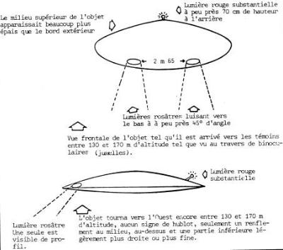 |
15 juillet 1968 - Au nord de Columbus, Indiana, vers 3 h du matin. L'ovni projettait un faisceau
chercheur vers le sol ainsi qu'un faisceau plus étroit ou rayon, de couleur rouge.
| 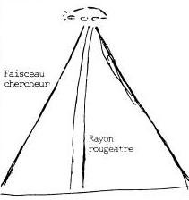 |
16 février 1967 - Au nord de Kingman, Arizona 23 h 43. L'ovni éclairait le sol. Il rejoint 2 autres
objets tandis qu'il 'éloignait en s'envolant. Il portait 3 lumières rouges et une verte.
| 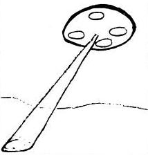 |
19 août 1968 - Oxon Hill, Maryland, 20 h 25. L'ovni apparut, survola et disparut en l'air dans les
nuages, visible en tout plusieurs minutes.
| 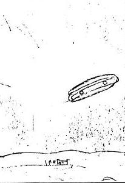 |
12 avril 1968 Cape Neddick, Maine, 23 h 15. L'ovni a été vu passant sous la Lune lors d'une
éclipse totale. Le corps de l'OVNI était rouge orange mat il avait des petites lumières rouges et une
lumière brillante et pulsante à un bout.
| 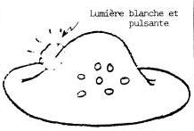 |
22 février 1966 - Au sud de Kingston, H.H. 21 h 05. L'ovni manœuvra pendant 35 mn. Il y eut 6
témoins, un mouvement de feuille morte tombante a été observé.
| 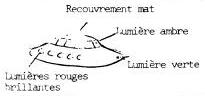 |
22 mars 1966 - Hillsdale, Michigan. Ovni observé pendant la vague du Michigan. Une lumière
jaune émanait de la bande centrale. Les autres lumières étaient : rouge, blanche et verte,
respectivement.
| 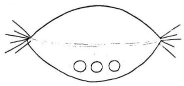 |
26 juillet 1965 - Hartshorne, Oklahoma, 19 h. L'ovni a survolé pendant 4 à 5 mn juste
au-dessus de la ligne des arbres devant un grand arbre, puis a filé comme un trait. La partie
supérieure était argentée, la partie inférieure gris-rouge, il y avait des points comme des
renfoncements.
| 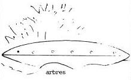 |
14 octobre 1966 - Au nord de Newton, Illinois, 18 h 45. L'ovni était jaune-rouge, une
ligne bleue autour du milieu, des lumières rouges juste autour du bord. L'objet éclairait le sol
et affectait la télévision. Il y avait d'autres caractéristiques typiques.
| 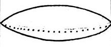 |
15 février 1967 Hollywood Bottom, Texas, 22 h 15. Une famille a observé l'ovni avec
des lumières dessus. Il y avait un bruit de vibration. Le dôme émettait une lumière bleue-verte,
l'avant une rouge-orange. Il y avait une traînée blanche claire.
| 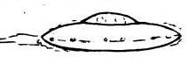 |
15 janvier 1967 Nord Granby, Connecticut, vers 17 h 45. L'ovni émettait des
faisceaux de lumière à partir des hublots.
| 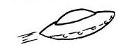 |
19 mars 1966 Big Rapids, Michigan 5 h 20 (matin). L'ovni était entoure d'une brume
bleuâtre et blanche. Les lumières au-dessous se sont allumées une par une. Un objet très
semblable a été vu à 70 km de là au Grands Rapides le 17 mars.
| 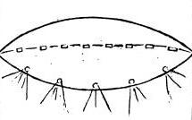 |
22 avril 1967 Tulsa, Oklahoma, 20 h 10. L'ovni a été aperçu par plusieurs
témoins. Les lumières ou hublots semblaient tourner.
| 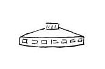 |
19 janvier 1967 Dunbar Ouest, vers 9 h 05 (matin). Un marchand a aperçu l'ovni
survolant à un peu plus d'un mètre au-dessus de la route inter-état n° 64 obstruant le
chemin. L'ovni de couleur d'aluminium s'est élevé rapidement hors de vue.
| 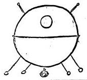 |
7 octobre 1965 Williamstown, New Jersey, 6 h (matin). L'ovni avait des
tâches de lumières oranges chatoyantes. Une lumière stable et jaune au-dessous. Il se
déplaçait lentement au ras des arbres.
| 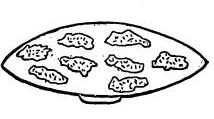 |
19 juillet 1965 Vaucluse, Australie, 17 h 30. L'ovni a été observé
décollant de la plage. Il y avait des bruits d'air s'engouffrant. Les chiens
aboyaient fortement.
| 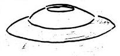 |
8 mars 1966 Chesterton, Indiana, 14 h 30. L'ovni survola un banc de
nuages pendant 4 a 5 mn, entouré d'une brume fine et claire, changea d'angle et
s'éloigna rapidement.
| 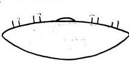 |